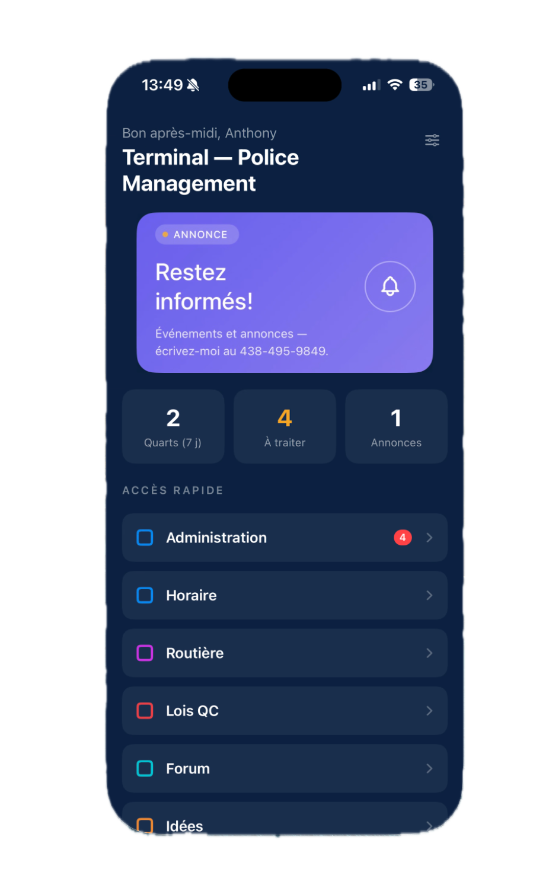
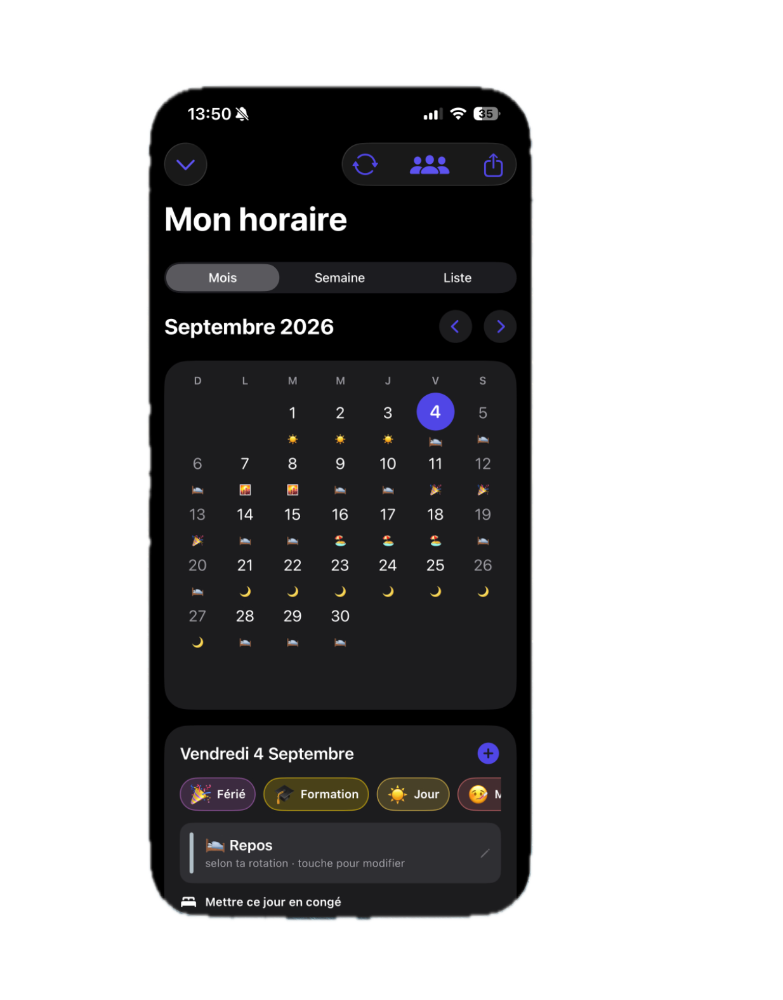
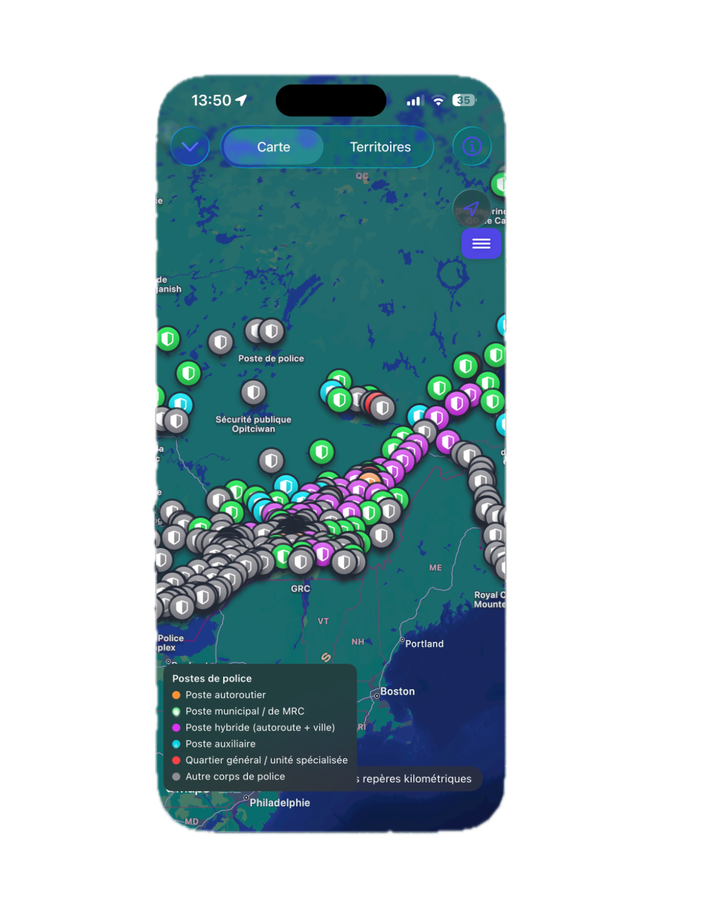
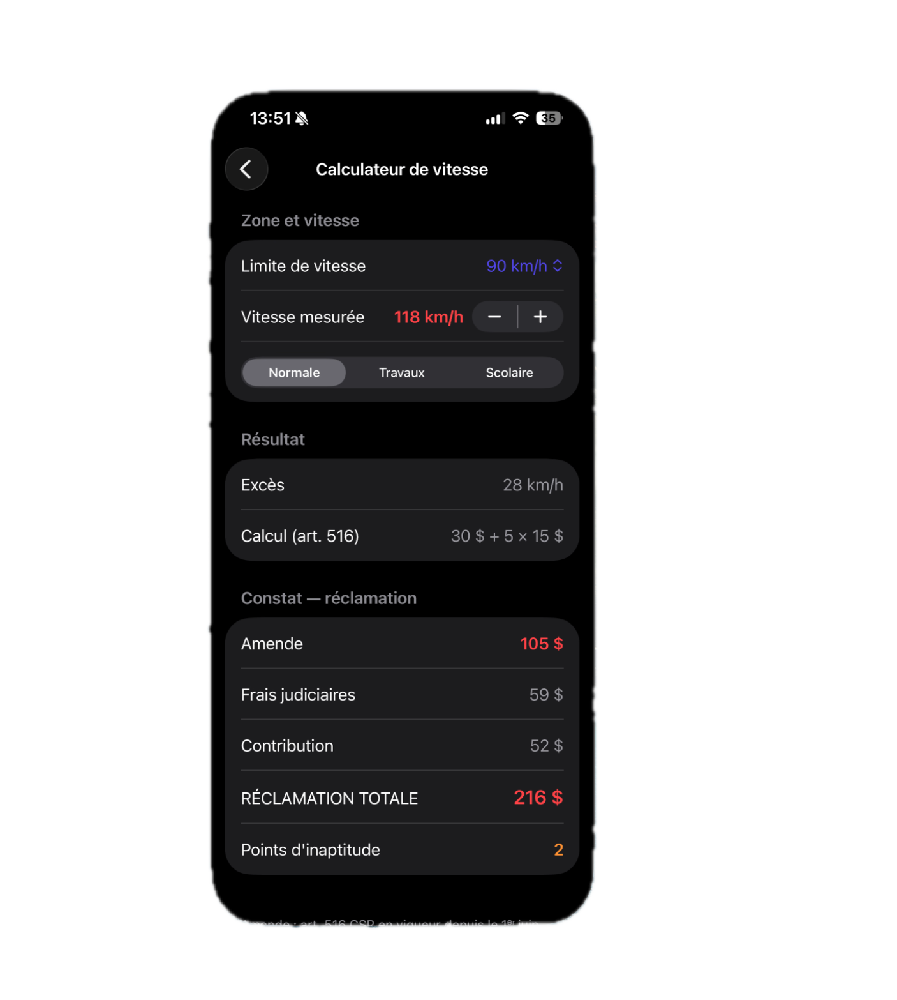
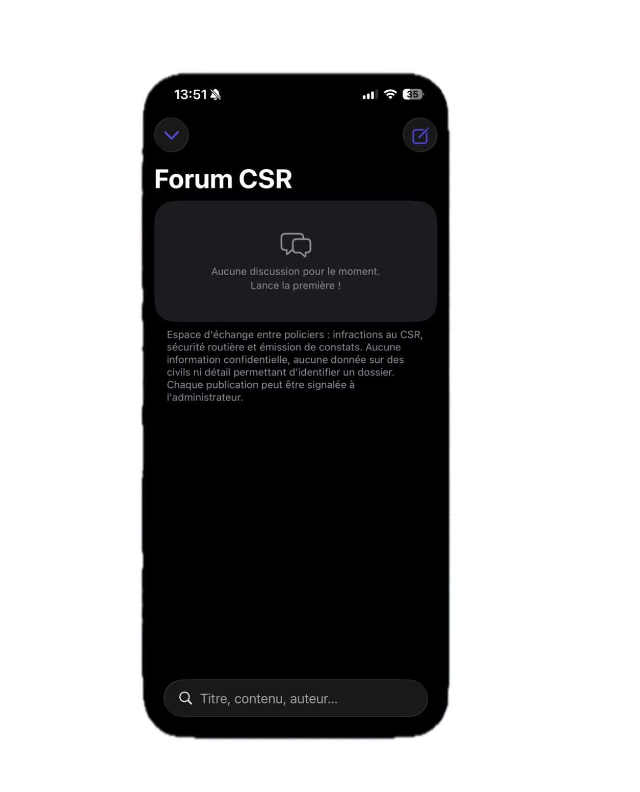
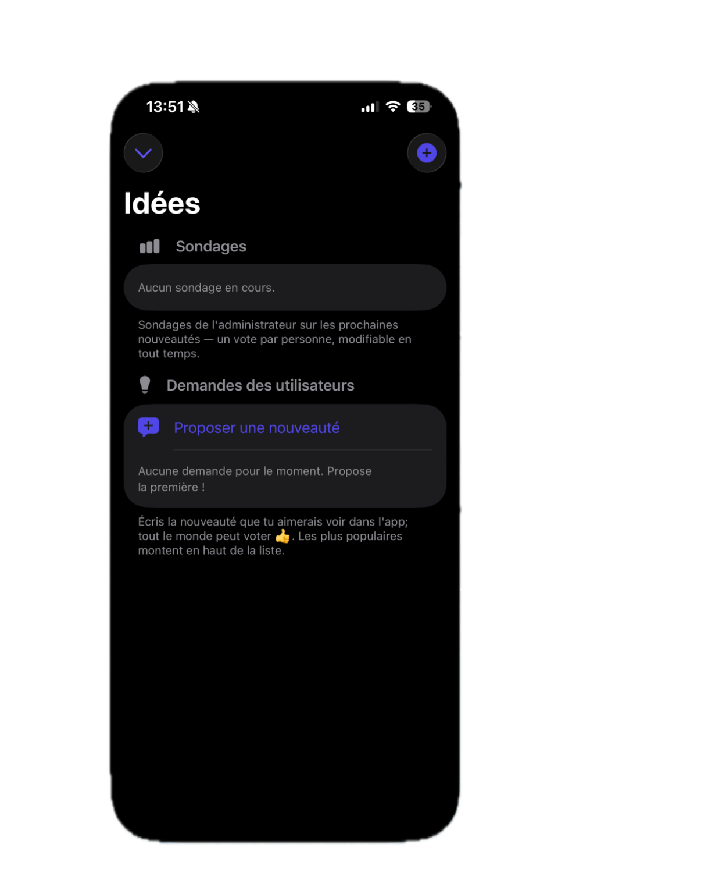

L'outil de terrain conçu pour les patrouilleurs du Québec
Police Management regroupe la gestion d'horaire, les cartes de territoires, les lois québécoises hors ligne et des outils de calcul d'amendes au même endroit.

Tout ce que fait l'application
Une suite complète de fonctionnalités développées pour optimiser les quarts de travail et les opérations sur le terrain.
Terminal & Accès Rapide
Un centre de contrôle épuré affichant le décompte de tes quarts à venir, les demandes à traiter et les annonces prioritaires. Donne un accès direct à tous les modules essentiels de l'application.

Gestion de Rotation & Horaire
Suivi complet de tes quarts de travail (Jour, Nuit, Formation, Repos, Férié). Planification en vues Mensuelle, Hebdomadaire ou sous forme de Liste adaptée aux cycles de rotation policiers.

Carte des Postes & Territoires
Cartographie interactive repérant l'ensemble des postes de police au Québec (autoroutiers, municipaux, MRC, hybrides, auxiliaires et GRC) avec localisation des repères kilométriques.

Lois du Québec (Hors ligne)
Consultation intégrale et instantanée des textes de loi (Code de la sécurité routière, Véhicules hors route, Transport rémunéré, Sécurité nautique, Assurance auto) sans connexion Internet.

Calculateur de Vitesse & Amendes
Outil de calcul instantané selon l'art. 516 du CSR. Calcule automatiquement l'excès de vitesse, l'amende de base, les frais judiciaires, la contribution et les points d'inaptitude selon les zones (Normale, Travaux, Scolaire).

Forum d'échange entre policiers
Espace de discussion sécurisé réservé aux échanges professionnels concernant les infractions au CSR, l'émission de constats et la sécurité routière, dans le respect de la confidentialité.

Sondages & Boîte à Idées
Propose directement des fonctionnalités que tu aimerais voir dans l'application. Système de vote communautaire permettant aux meilleures idées d'être développées en priorité.

Sécurité & Biométrie
Protection des données de l'application par mot de passe et déverrouillage biométrique Face ID / Touch ID pour un accès rapide et confidentiel sur le terrain.